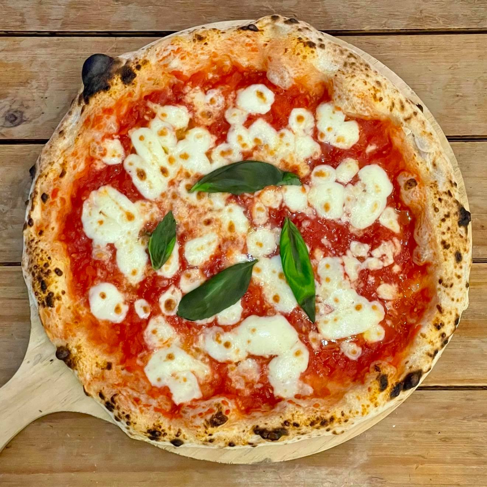

A simple preparation of a pizza in the Neapolitan way, tasteful and perfect
for an all-day-home day.
- 1 ball Best Homemade Pizza Dough
- ⅓ cup Easy Pizza Sauce
- 3 ounces fresh mozzarella cheese (or about ¾ cup shredded mozzarella)
- Kosher salt
- 2 basil leaves
- Semolina flour or cornmeal, for dusting the pizza peel
- Prepare the dough using the Best Pizza Dough recipe.Follow the
preparation instructions in the dough recipe if prepared in advance.
- Place a pizza stone in the oven and preheat to 500°F. OR preheat your pizza oven.
- Make the Homemade Pizza Sauce.
- Slice the mozzarella into ¼ inch thick pieces. If it's incredibly watery fresh mozzarella (all
brands vary), you may want to let it sit on a paper towel to remove moisture for about 15
minutes then dab the mozzarella with the paper towel to remove any additional moisture.
- When the oven is ready, stretch the dough into a circle.
Sprinkle a pizza peel with semolina flour or cornmeal, then carefully place the dough on top.
Spread the pizza sauce across the dough. Top with mozzarella cheese. Taste a bite of the
mozzarella cheese; if it does
not taste salty, add a few pinches of kosher salt to the pizza.
- If you're baking in a pizza oven, add the basil leaves. For baking in a standard oven, add the
basil leaves after you bake (the leaves turn black in a standard oven).
- Transfer the pizza to the pizza stone on the pizza peel, then bake until the cheese is melted,
about 7 minutes in the oven (or 1 minute in the pizza oven). Slice into pieces and serve
immediately.